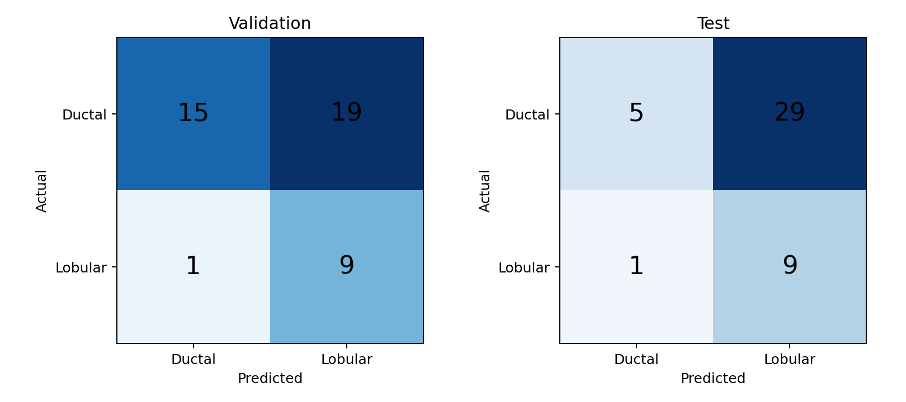
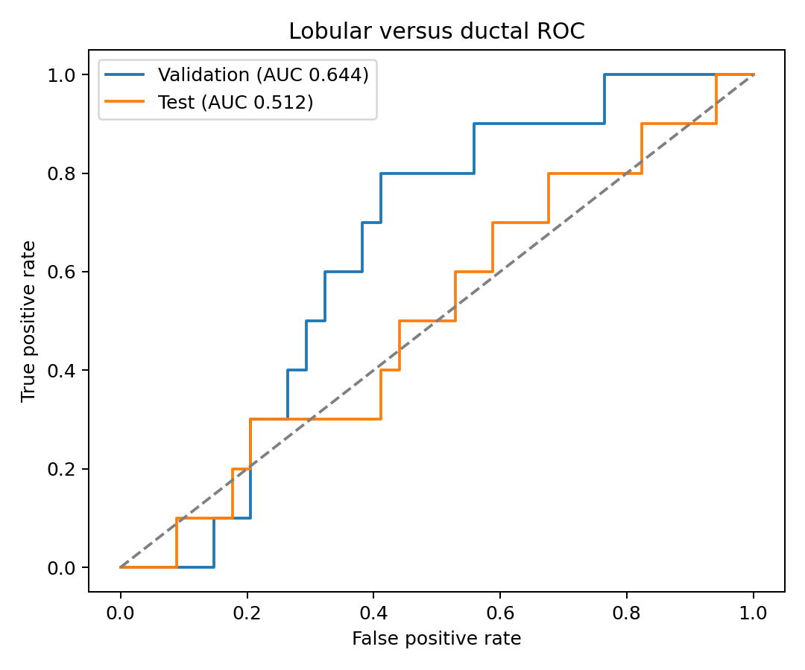
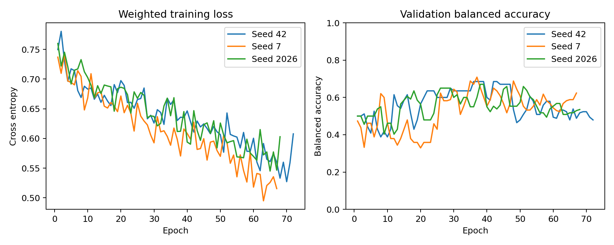
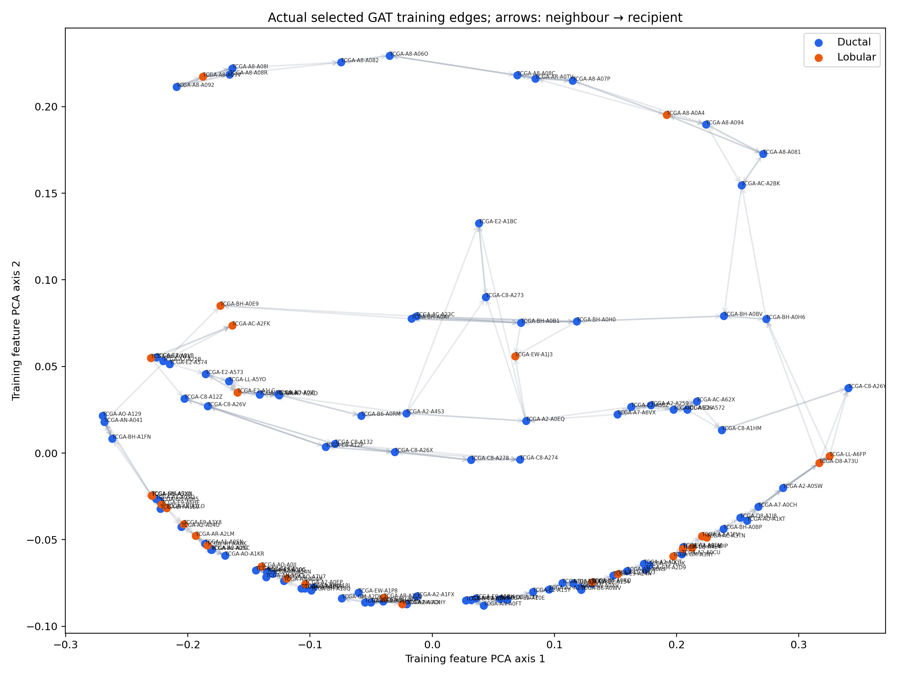

bidirectional cross-attention fusion followed by two residual GAT layers with per-patient LayerNorm and linear classifier → ductal/lobular prediction.
Eight predefined configurations, three seeds, fixed patient splits. Selection uses mean seed validation balanced accuracy, then macro-F1 and loss. Fixed probability threshold: 0.5. Test features were loaded only after selection. Test accuracy 31.8% (14/44), balanced accuracy 52.4%, ROC-AUC 0.512. This test split was inspected and is not fresh external validation.
| Split | Patients | Accuracy | Balanced accuracy | Macro-F1 | ROC-AUC |
|---|---|---|---|---|---|
| Validation | 44 | 54.5% | 67.1% | 0.537 | 0.644 |
| Test | 44 | 31.8% | 52.4% | 0.312 | 0.512 |
These are small-sample exploratory results. Validation metrics are optimistic after selection; ROC-AUC does not establish thresholded accuracy or calibration.
Selected configuration: {'config': 1, 'k': 3, 'minimum': 0.0, 'dropout': 0.2, 'lr': 0.001, 'mean_balanced_accuracy': 0.688235294117647, 'std_balanced_accuracy': 0.015747429808048042, 'mean_macro_f1': 0.5734321358210303, 'mean_log_loss': 0.6394251363952956}. Similarity filtering at 0.25 did not change the candidate graphs in this search. Residual pathways preserve patient information; improvements cannot be attributed solely to graph reasoning without a graph-ablation comparison.



Actual saved edges and cosine scores, with PCA used only for visual positions. Self-loops are omitted. Labels colour the visualization and were not used to choose edges. Similarity edges are not explanations or clinical relationships.

Metrics · Per-patient predictions · Validation search · Protocol